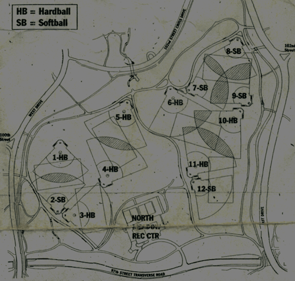

Falcons > Ball Parks > North Meadow
North Meadow--Central Park & 98th Street
The North Meadow Fields are located in Central Park on 98th Street. There are 12 ball fields (7 hard ball, 5 softball), located at mid-park from 97th through 102nd Streets.

Phone Number:
212-628-1036 ext. 808
Directions to the North Meadow fields:
  | By Subway, take the "B" or the "C" train to the 96th Street Station.
Time-Saving Tip: The Subway exit is located at the north end of the station. Stay in the front car of the train and you will be right near the exit.
Enter Central Park West (north of 97th Street) and walk towards 98th Street and the middle of the park. The field numbers are located on the backstops. |
Web Address:
http://www.centralparknyc.org/visit/things-to-see/north-end/north-meadow.html
Return to Ball Parks Home Page
Useful Links
MTA Online -- Interactive New York City Subway Map
Central Park Online -- Central Park Map